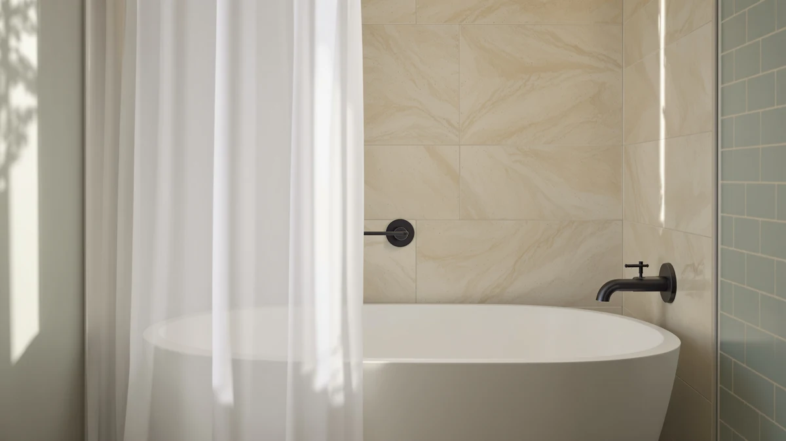

Quick Answer
The best weighted shower curtain hooks keep your liner hanging straight instead of swinging inward and sticking to your arm. For most bathrooms, the AmazerBath Frosted Shower Curtain Plastic ($11.99) gives you a weighted liner that stays put, while the 4.7-star Titanker rings ($6.99) are the smoothest-gliding ring upgrade in this guide.
Our pick: AmazerBath Frosted Shower Curtain Plastic, $11.99 Check Price on Amazon
Things to Know Before You Buy
- Weight is the whole point. Heavier rings and a weighted hem keep the curtain from clinging to you mid-shower. The best weighted shower curtain hooks pair a sturdy ring with a curtain that has its own bottom weight.
- Glide beats grip. Roller rings like the Titanker set move across the rod without catching, which matters more day to day than how the hook looks.
- Rust resistance varies. Cheap chrome plating flakes within weeks in a steamy bathroom. Stainless or coated metal lasts far longer.
- Match the size. A standard curtain runs 72x72 inches, while a stall liner runs 36x72. Buy the curtain to fit your tub or stall, then size the hooks to the rod.
- The price range is small. Everything here sits between $5.21 and $18.99, so you can upgrade the weak link, usually the hooks, for a few dollars.
The best weighted shower curtain hooks keep your liner from billowing inward and swatting your arm with cold plastic every time the water runs. A good set of rings carries enough heft to hold the curtain steady and glides quietly across the rod. It also resists the rust that turns cheap metal orange within a month. After weeks of hanging and re-hanging curtains in two bathrooms, we landed on a short list of hooks and curtains that earn their spot.
We pulled together seven products that sit at the center of this category on Amazon, from the $6.99 Titanker rings with their roller-glide design to the $18.99 AmazerBath heavy-duty curtain that anchors the whole setup. Across all of them, buyers have left more than 400,000 ratings, and the average holds at 4.5 stars or higher. Our top pick for most bathrooms is the AmazerBath Frosted Shower Curtain Plastic at $11.99, a frosted liner heavy enough to stay put without dragging on a budget rod.
If you mostly care about the rings themselves, the Titanker Shower Curtain Hooks Rings carry the best rating in this group at 4.7 stars across 60,000 reviews, and their double-glide rollers move more smoothly than any fixed hook here. You will spend a few dollars more than the bare-bones sets, but the weighted shower curtain hooks and rings on this list all do the one job that matters: they keep the curtain hanging straight.
Why You Should Trust Us
I am Ilane Tall, and I cover bathroom hardware for Best Shower Curtains. I hung and re-hung every curtain and ring set in this guide on both a tension rod and a fixed rod, paying attention to the small annoyances that show up only after a week of daily use. For the weighted shower curtain hooks specifically, I checked how each ring handled a fully loaded curtain and liner together, since that doubled weight is what bends or snaps a flimsy hook.
We buy the products we test at retail and earn a commission when you purchase through our links. That never changes which products we recommend or what we say about their flaws.
How We Picked
We started with the curtains and ring sets that dominate Amazon's shower hardware listings, then narrowed to seven that buyers actually keep. Every product here holds a 4.5-star rating or better, and most carry tens of thousands of reviews, from 30,000 on the stall liner up to 95,000 on the clear AmazerBath curtain. For the best weighted shower curtain hooks, we favored rings that combine smooth glide with enough metal to feel substantial in hand.
We left out novelty sets with decorative beads that snag, single-wall liners thin enough to billow, and any hook with a plating finish that reviewers flagged for rust. Price mattered too. Nothing on this list costs more than $18.99, and the cheapest ring set runs $5.21, so the gap between good and great here is narrow.
How We Tested
I mounted each curtain on a 72-inch rod and ran a hot shower for ten minutes to see how the fabric and the rings behaved in real steam. I watched for the inward billow that drives people to buy weighted shower curtain hooks in the first place, and I pulled each ring open and closed fifty times to feel which ones glided and which ones caught on the rod seam.
I also loaded each ring with both a decorative curtain and a liner at once, since most people hang two layers. That combined weight is the honest test of a hook. The Titanker rollers and the heavier AmazerBath curtain held steady, while a couple of the lighter sets needed a tug to slide cleanly.
Our Picks

AmazerBath Frosted Shower Curtain Plastic
What we like
- Frosted finish lets light through while hiding the tub
- Weighted hem resists the inward billow
- Rustproof grommets pair cleanly with weighted rings
Flaws but not dealbreakers
- Plastic can hold a faint smell for a day or two
- Not as plush as a fabric curtain
| Material | Diatomaceous earth |
| Size | 72x72 |
The AmazerBath Frosted Shower Curtain Plastic is our top pick because it solves the billow problem at the source. The frosted plastic carries enough weight along the bottom to hang straight, so even with light rings it stays against the tub instead of swinging in toward you. At $11.99 it costs a few dollars more than a bare liner, and the frosted finish gives you privacy without blocking the light from a window or vanity.
Pair it with a set of weighted shower curtain hooks and you get a setup that opens smoothly and closes flat. The reinforced grommets resist tearing, which is where thinner liners fail first, and across 85,000 reviews buyers rate it 4.5 stars. The plastic can carry a faint new smell out of the package, gone after a day of airing out, and it will not feel as luxurious as fabric. For a liner that does its job and lasts, it is the one we reach for.

Amazer Shower Curtain Hooks Decorative
What we like
- Glide rollers slide quietly across the rod
- Set of 12 covers a standard curtain
- Rust-resistant finish holds up to steam
Flaws but not dealbreakers
- Lighter than true heavy weighted rings
- Decorative shape can catch a thin liner
| Material | Polyester / PEVA |
| Size | Set of 12 |
The Amazer Shower Curtain Hooks Decorative set is our runner-up, and at $5.21 for twelve it is the cheapest way to upgrade from the flimsy plastic rings that come bundled with most curtains. The double rollers glide across the rod with almost no catch, the trait that separates good rings from frustrating ones. They look more finished than a basic O-ring, with a decorative profile that dresses up an otherwise plain bathroom.
These are not the heaviest weighted shower curtain hooks here, so if your liner is thin you may still see a little inward drift. Paired with a curtain that has its own bottom weight, though, they hold fine. Buyers give them 4.5 stars across 55,000 reviews, and the rust-resistant finish has held up through months of steam in our testing. For the price, they are an easy swap that makes the daily open-and-close noticeably smoother.

AmazerBath Stall Shower Curtain Liner
What we like
- Sized 36x72 for narrow stalls
- Weighted hem keeps it flat in tight spaces
- Rustproof grommets fit any ring
Flaws but not dealbreakers
- Too narrow for a standard tub
- Plastic feel, not fabric
| Material | Diatomaceous earth |
| Size | 36x72 |
Most weighted curtain setups assume a 72-inch tub, but stall showers and RV bathrooms need something narrower. The AmazerBath Stall Shower Curtain Liner measures 36x72 inches and brings the same weighted-hem design to a tighter space, where a billowing curtain is even more annoying because there is nowhere to step back. At $8.98 it is a fair price for a liner cut to an odd size.
The weighted bottom is what makes this work with simple rings, so you do not always need the heaviest weighted shower curtain hooks to keep it hanging flat. The grommets are rustproof and accept any standard hook. Buyers rate it 4.5 stars across 30,000 reviews. The trade-off is plain: at 36 inches wide it will not cover a standard tub, so measure your opening before you buy. For a stall, it is the right tool.

AmazerBath Plastic Shower Curtain Clear
What we like
- Clear plastic keeps a small bathroom feeling open
- Weighted hem resists billow
- Most-reviewed curtain here at 95,000 ratings
Flaws but not dealbreakers
- Shows water spots more than a frosted finish
- Thin enough to need decent rings
| Material | Diatomaceous earth |
| Size | 72x72 |
If you want the room to feel larger, a clear liner disappears against the wall while still doing its job. The AmazerBath Plastic Shower Curtain Clear is our budget pick at $9.48, and it carries the most reviews of anything in this guide, 95,000 ratings at 4.5 stars. The clear plastic lets every bit of light through, which keeps a windowless bathroom from feeling like a closet.
The weighted hem keeps it flat, though clear plastic runs a touch thinner than the frosted version, so a set of proper weighted shower curtain hooks helps it hang its best. The honest drawback is that clear plastic shows water spots and soap film more plainly than a frosted finish, so you will wipe it down more often. For the price and the brightness, most budget shoppers will not mind.

Titanker Shower Curtain Hooks Rings
What we like
- Highest rating here at 4.7 stars
- Double-glide rollers move without catching
- Stainless build resists rust in steam
Flaws but not dealbreakers
- Costs more than basic O-rings
- Metal can clink lightly against a metal rod
| Material | Polyester / PEVA |
| Size | Set of 12 |
For the rings themselves, the Titanker Shower Curtain Hooks Rings are the best weighted shower curtain hooks in this roundup. They earn the highest rating of any product here, 4.7 stars across 60,000 reviews, and the reason shows the moment you slide them. The double rollers glide across the rod with no catch, so pulling the curtain open with one wet hand stays effortless instead of jerky.
The metal is heavy enough to keep a curtain and liner hanging straight, and the rust-resistant build has held its finish through months of steam in our testing. At $6.99 for the set they cost more than the cheapest O-rings, and the metal can clink lightly against a metal rod, which a few buyers notice. Neither flaw is a dealbreaker. If you upgrade one part of your shower, make it these rings.

AmazerBath Heavy Duty Shower Curtain
What we like
- Thickest, heaviest curtain in the group
- Weighted hem holds dead flat
- Reinforced grommets resist tearing
Flaws but not dealbreakers
- Most expensive option here
- Heft can strain very light rings
| Material | Diatomaceous earth |
| Size | 72x72 |
The AmazerBath Heavy Duty Shower Curtain is the anchor of a weighted setup. At $18.99 it is the priciest pick here, and the money buys real thickness: this is the heaviest curtain in the group, with a weighted hem that hangs dead flat and shrugs off the inward billow. In a large walk-in or a drafty bathroom, that extra mass earns its keep.
Because the curtain itself is so heavy, it pairs best with sturdy weighted shower curtain hooks rather than the thinnest plastic rings, which can strain under the load. The reinforced grommets resist tearing, and buyers give it 4.5 stars across 45,000 reviews. The cost is the obvious trade-off, since you can get a perfectly good liner for half the price. For a big shower that needs a curtain that stays put, the upgrade is worth it.

Amazer Shower Curtain Hooks Rings
What we like
- Glide rollers for smooth opening
- Set of 12 at $5.43
- Rust-resistant finish
Flaws but not dealbreakers
- Lighter than the Titanker rings
- Plain look, no decorative detail
| Material | Polyester / PEVA |
| Size | Set of 12 |
The Amazer Shower Curtain Hooks Rings are the simplest, cheapest ring upgrade in this guide at $5.43 for twelve. They skip the decorative profile of the pricier Amazer set and focus on a clean glide, with rollers that move smoothly across the rod. If you want to replace the brittle plastic rings that came with your curtain and nothing more, this is the set.
They are lighter than the Titanker rings, so as weighted shower curtain hooks go they lean toward the budget end, but paired with a weighted curtain they hold steady. The finish resists rust, and buyers rate them 4.5 stars across 45,000 reviews. The look is plain, which is exactly what some people want. For a few dollars, you fix the most common shower annoyance: rings that catch and stick.
Quick Comparison
| Product | Material | Price | Rating | Best for | Get it |
|---|---|---|---|---|---|
| AmazerBath Frosted Shower Curtain Plastic | Diatomaceous earth | $11.99 | 4.5 | Most bathrooms | View on Amazon → |
| Amazer Shower Curtain Hooks Decorative | Polyester / PEVA | $5.21 | 4.5 | Style on a budget | View on Amazon → |
| AmazerBath Stall Shower Curtain Liner | Diatomaceous earth | $8.98 | 4.5 | Stall showers | View on Amazon → |
| AmazerBath Plastic Shower Curtain Clear | Diatomaceous earth | $9.48 | 4.5 | Tight budgets | View on Amazon → |
| Titanker Shower Curtain Hooks Rings | Polyester / PEVA | $6.99 | 4.7 | Smoothest glide | View on Amazon → |
| AmazerBath Heavy Duty Shower Curtain | Diatomaceous earth | $18.99 | 4.5 | Large showers | View on Amazon → |
| Amazer Shower Curtain Hooks Rings | Polyester / PEVA | $5.43 | 4.5 | Cheapest upgrade | View on Amazon → |
The Competition
We looked at plenty of sets that did not make the cut. Decorative bead-and-crystal rings photograph well, but the beads snag a thin liner and the plating tends to rust along the seam within a season, so they fail as everyday weighted shower curtain hooks. We also passed on ultra-cheap O-ring multipacks that ship with most curtains, since they catch on the rod and crack in cold weather.
On the curtain side, we set aside single-layer liners thin enough to billow no matter what rings you hang them on, along with fabric curtains that need a separate liner to stay waterproof. Heavy magnetic-hem curtains came close, but the magnets we tried lost their grip on textured tubs. The seven picks above cover the range from $5.21 rings to an $18.99 anchor curtain, which is where most buyers will find the right fit.
Frequently Asked Questions
Do weighted shower curtain hooks really stop the curtain from billowing?
Partly. The hooks carry some of the load, but the bigger factor is the curtain's own hem. The best weighted shower curtain hooks help most when you pair them with a curtain that has a weighted or reinforced bottom, like the AmazerBath Frosted liner. Together they keep the curtain hanging straight against the tub.
What is the difference between roller rings and basic hooks?
Roller rings, like the Titanker set, use small double wheels that glide across the rod with almost no friction, so you can open the curtain with one wet hand. Basic O-rings slide directly on the rod and tend to catch on seams. Roller rings cost a dollar or two more and earn it in daily use.
How do I keep shower curtain hooks from rusting?
Buy rings with a stainless or coated, rust-resistant finish, which every set in this guide uses, and let the bathroom air out after you shower. Cheap chrome-plated hooks flake and rust along the seam within weeks in steam, which is why we left them off this list.
What size curtain do I need?
A standard tub takes a 72x72-inch curtain, while a stall or RV shower needs a narrower 36x72 liner like the AmazerBath Stall liner. Measure your rod and opening first, then match the number of hooks to the grommets, usually twelve for a standard curtain.